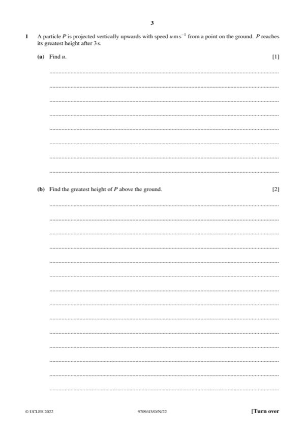

Question 1

Original paper page 3
Part 1(a) — solution
- [B1] From v = u + at or equivalent
Mark points
- [B1] From v = u + at or equivalent
Part 1 — solution
- [M1] Use of suvat formulae
- [A1] FT FT u2/2g with their u from (a)
Mark points
- [M1] Use of suvat formulae
- [A1] FT FT u2/2g with their u from (a)
Part 1 — solution
- [M1] Conservation of momentum
Mark points
- [M1] Conservation of momentum